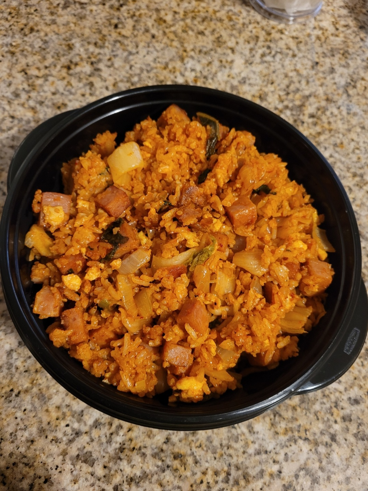

Kimchi Fried Rice

Description
An easy and delcious recipe for one pan kimchi fried rice
Takes about 15-20 minutes to make, including prep time!
Ingredients
- Spam
- Onion
- Garlic
- Kimchi
- Eggs
- Cold Rice
- Salt and Pepper
- Soy Sauce
- Sesame Oil
- Gochujang
- Green Onion
Steps
- Dice spam, onion, garlic, and kimchi. Fry spam in cooking oil, then add onion, then add garlic, then add kimchi.
- Push all the spam, onion, garlic, and kimchi to the side of the wok. Scramble eggs and add to the other side. Cook like scrambled eggs :3
- Add cold rice. Break up any big clumps.
- Season with salt and peppa pig. Add sesame oil (not too much bc sesame oil strong) and soy sauce. Mix well so all the rice is coated.
- Add gochujang. Mix.
- Chop and add green onions.
- Serve hot!